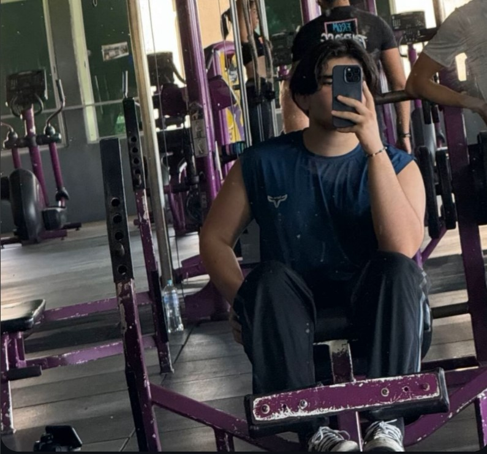

Una etapa de crecimiento, responsabilidades y nuevas experiencias.
Construyendo Mi Futuro
Universidad
Mi etapa universitaria fue un periodo de intenso crecimiento intelectual y personal. Elegí estudiar Ingeniería en Sistemas, una carrera que desafió mis habilidades y expandió mi comprensión del mundo tecnológico. Durante estos 2 años, no solo adquirí conocimientos técnicos, sino que también desarrollé habilidades cruciales como el pensamiento crítico, la resolución de problemas y el trabajo en equipo. Participé en proyectos innovadores, lo que me permitió aplicar mis conocimientos en situaciones del mundo real. La universidad también me brindó la oportunidad de hacer conexiones valiosas con compañeros y profesores que compartían mi pasión por la tecnología y la innovación.

Gym
El gym se convirtió en una parte integral de mi vida durante mi preadultez. Comencé a tomar en serio mi salud física y mental, estableciendo una rutina de ejercicios regular. Al principio, fue un desafío encontrar el equilibrio entre mis estudios, el trabajo y el entrenamiento, pero pronto descubrí que el gimnasio era una excelente forma de manejar el estrés y mantener mi energía alta. Gradualmente, vi mejoras no solo en mi condición física, sino también en mi confianza y disciplina. El gym se convirtió en mi espacio personal de superación, donde aprendí la importancia de la consistencia y la perseverancia. Además, formé una comunidad de amigos con intereses similares, lo que hizo que mis sesiones de entrenamiento fueran aún más gratificantes y motivadoras.
Trabajo
Al ser mi primer trabajo en el negocio familiar la verdad que tuve ciertas facilidades pero de igual forma me ayudo a desarrollar la responsabilidad y a salir de una burbuja donde todo es facil.
Mi preadultez fue una etapa de transición crucial, marcada por el equilibrio entre la educación universitaria, el cuidado personal y mis primeras experiencias laborales. Cada uno de estos aspectos contribuyó significativamente a mi crecimiento y desarrollo, preparándome para los desafíos y oportunidades de la vida adulta.
Esta etapa me enseñó la importancia de la autodisciplina, la gestión del tiempo y la perseverancia. Aprendí a establecer prioridades, a manejar múltiples responsabilidades y a cuidar tanto de mi desarrollo profesional como de mi bienestar personal. Las experiencias y habilidades que adquirí durante este período sentaron una base sólida para mi futuro, moldeando mis aspiraciones y mi enfoque de la vida.